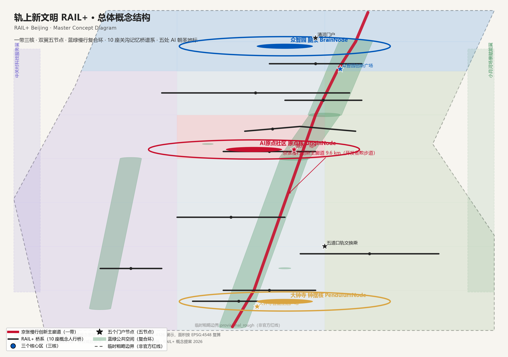
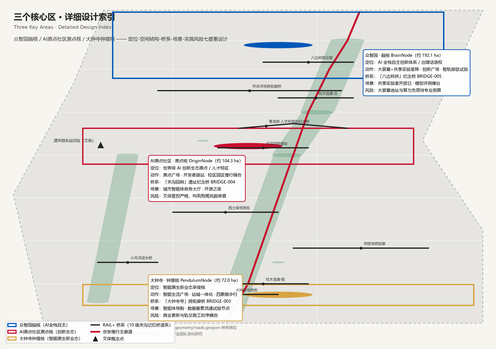
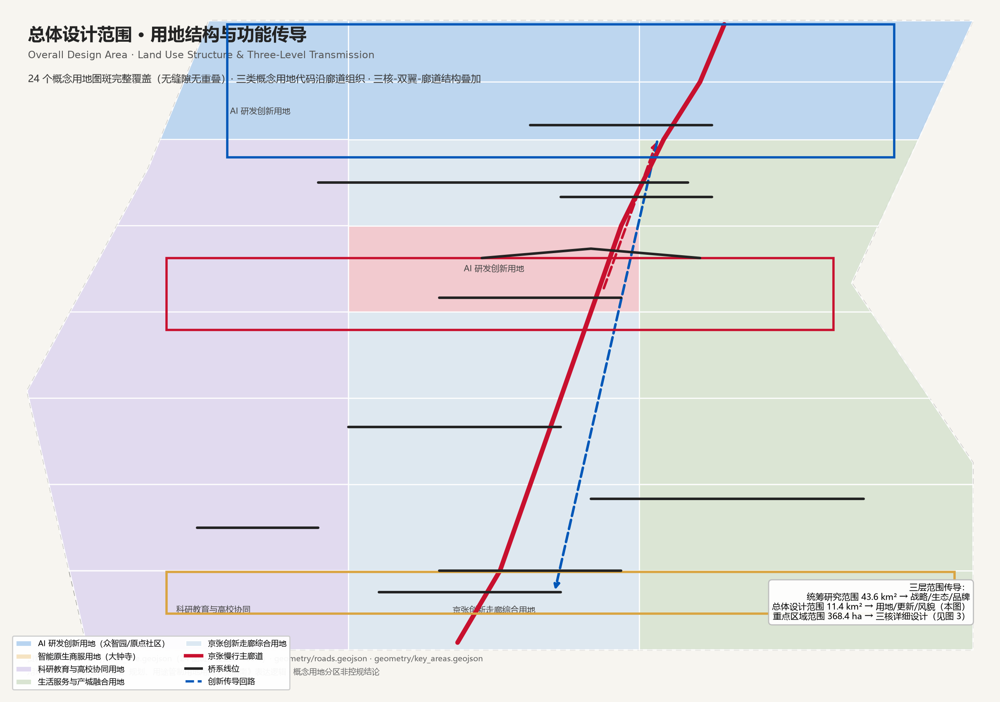
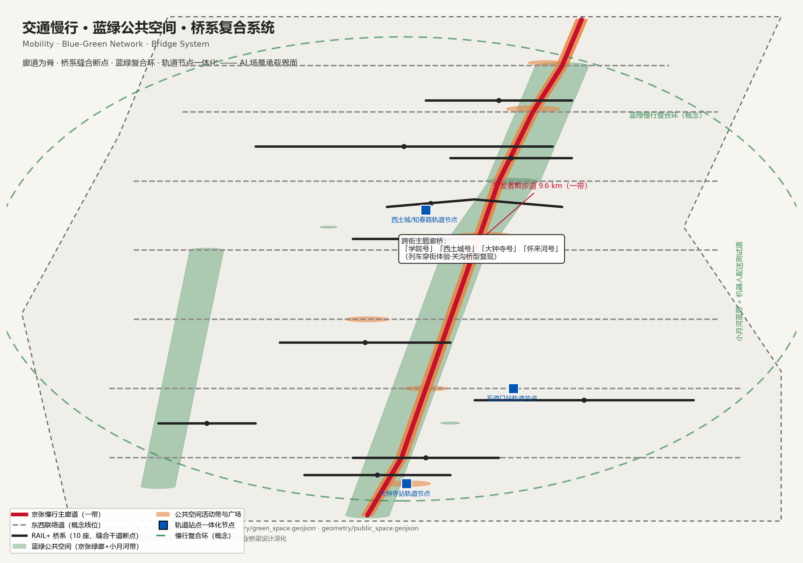
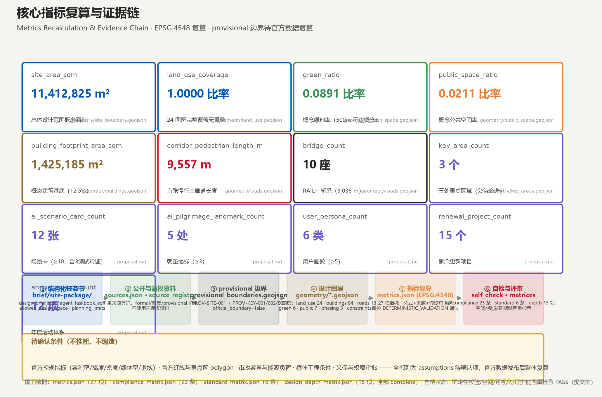

| 层级 | 范围与面积 | 工作目标 | 设计深度 |
|---|---|---|---|
| 统筹研究范围 | 约 43.6 km²（北五环—西直门外大街—京藏高速—万泉河路） | AI 产业生态、未来城市形态、三区两翼协同、品牌与叙事 | 战略与产业研究 |
| 总体设计范围 | 约 11.4 km²（遗址公园周边 1-2 km） | 城市更新总体框架、用地与风貌、交通市政、活力带 | 控规深度城市设计 |
| 重点区域范围 | 约 368.4 公顷（众智园 192.1 ha / AI 原点社区 104.3 ha / 大钟寺 72.0 ha） | 三处片区功能、建筑、公共空间、交通、AI 场景详细设计 | 规划综合实施方案深度 |
三层传导：统筹层回答「这条带是什么、服务谁、凭什么全球知名」；总体层把答案落到「更新什么、怎么布局、用什么支撑」；重点层验证「具体地块与场景怎么组合才可实施」。
约 192.1 ha。AI 全栈自主创新体系与 AI 治理话语权载体：算力—算法—数据—标准—安全—产业展示完整链路；大装置与共享实验室簇、智轨接驳试验段（SC-04）、「八达岭拱」纪念桥（BRIDGE-005）。
约 104.3 ha。世界级 AI 创新生态原点：近校创新、成果孵化转化、开源体系与人才特区；原点广场（PUBLIC-001）、城市智能体政务大厅（SC-06）、全球开发者驿站（SC-12）、「关沟回响」纪念桥（BRIDGE-004）。
约 72.0 ha。智能原生新业态承接核：智能体、智能终端、内容消费、数据要素与数字资产的「城市钟摆」；智能生活广场（PUBLIC-003）、数据要素流通试验节点（SC-09）、「大钟寺号」跨街廊桥（BRIDGE-003）。


三类概念用地代码沿廊道两侧组织：研发创新居西、生活服务居东、教育科研守校园周边、商服功能意向聚大钟寺（商服用地比例由专业团队在控规深化阶段落实）。产业功能比例按概念用地代码实测（AI 研发创新与走廊综合约 45%、生活服务与产城融合约 28%、科研教育约 27%）为概念目标值，不构成控规指标。

概念路网 = 1 条慢行主廊道（ROAD-001，约 9.6 km）+ 7 条东西联络道 + 10 座人行桥（RAIL+Bridge 关沟记忆桥谱系，约 3.0 km）；轨道站点一体化：五道口（13 号线）、西土城/知春路（10 号线、昌平线南延）、大钟寺（12 号线）、清河（13 号线、京张高铁）；均以「站城一体、最后一公里慢行优先」组织。
绿色廊道三段（GREEN-001 北段 / GREEN-002 中段 / GREEN-003 南段）+ 小月河蓝带（GREEN-004）+ 学院区口袋公园（GREEN-005）+ 原点绿心（GREEN-006），概念绿地率约 8.9%，慢行活动带（PUBLIC-000）与绿地嵌套。
跨街廊桥（学院号/西土城号/大钟寺号/怀来河号，统一「列车穿街」语言）、遗址纪念桥（关沟回响/八达岭拱/青龙桥·人字形）、公园连接桥（枕木连廊·南/北）、滨水桥（小月河桥）——复现京张铁路关沟段典型桥型（怀来河七孔钢桁架、关沟石拱、华伦式钢梁、宽肢工字梁、青龙桥人字形），把被干道切断的廊道在三维上重新缝合。南端（五桂头意象）与北端（清河门户）预留桥位。
五处 AI 朝圣地标：L1 智能体贡献荣誉墙（碑刻纪念体系）· L2 开发者散步道 · L3 开源成果展示廊 GitWall · L4 AI 里程碑径 · L5 原点广场。每年最杰出的 Agent 贡献将刻碑保留。
概念建筑基底约 142.5 万 m²（占设计范围约 12.5%），84 个概念建筑簇，街块尺度以 80-160 m 为主（约三成达 160-180 m，TOD 步行街区尺度）。拆改留概念分类（按面积实测）：保留约 26%（高校科研、文保与老社区肌理）、改造约 27%（低效楼宇功能置换）、新建约 47%（研发创新用地节点）——以建筑簇 action_class 字段表达，不构成任何地块拆改留结论，须以官方控规、权属与现状测绘复核。建筑高度、容积率、密度为待确认项（A-CONTROLS-001）。
12 张 AI 场景卡（要求 ≥10，含 3 张测试验证场景 SC-04/09/10）。每张场景卡包含场景定位、空间落点、服务对象、运行数据边界、隐私与人工复核、运营主体（概念）与对应图层。测试验证场景仅在封闭/受控路段与沙盒内试验，需主管部门许可、第三方安全评估与人工监督，不表述为已批准运营。
P1 开源开发者 · P2 AI 科学家/研究员 · P3 AI 创业者/企业管理者 · P4 高校学生 · P5 原住居民与铁路职工家庭 · P6 国际访客/AI 朝圣者。
15 个概念更新项目，三期实施（概念分期，非开发时序结论）：
| 分期 | 代表项目 |
|---|---|
| P1 近期启动带（2026-2028） | 京张遗址公园北段贯通 · 清华园车站旧址文化节点 · 开发者散步道南段（含「关沟回响」纪念桥）· 原点广场与发布中心 · AI 原点社区人才驿站 |
| P2 中期拓展带（2028-2031） | 开源成果展示廊 GitWall · 众智园创新广场（含「八达岭拱」纪念桥）· 智轨接驳试验段 · 大钟寺智能生活广场（含「大钟寺号」廊桥）· 小月河蓝绿带修复（含小月河桥） |
| P3 远期缝合带（2031-2035） | 大钟寺智能原生消费街区改造 · 中关村翼 AI 法律街区 · 荣誉墙纪念广场 · 五道口站一体化改造（含「学院号」廊桥）· 全域慢行环线缝合（含「西土城号」廊桥与枕木连廊） |
年度活动体系（12 项）：RAIL+Fest 年度大会（8 月）· RAIL+Dev 开发者周 · AI 开源之夜 · Hackathon in the Park · Demo Day · 智能体竞赛季 · AI 朝圣季 · 开发者荣誉年度盛典 · 国际 AI 治理论坛 · 校园 AI 公开课季 · 数据要素开放周 · 年末回顾展。运营机制：Agent Credit 贡献积分、开源贡献者计划、开发者大使网络、场景开放平台（数据沙盒+测试通道+准入评估+人工复核委员会）、Rail Pass 护照集章、「朝圣—试用—扎根」转化漏斗。

compliance_matrix.json 覆盖公告 1.3.1-1.3.3、1.4.1-1.4.3、1.5.1.1-1.5.3.3 全部 17 条任务与六项智能体任务（agent.1-agent.6，共 23 条，逐条给出章节、图层、指标、图纸、HTML 与来源证据）：
| 任务 | 本方案响应 |
|---|---|
| agent.1 总体概念/命名/视觉规范 | 「轨上新文明 RAIL+」、三带三核双翼、RAIL+ Logo 与三色视觉体系（道砟灰/中关村蓝/学院红） |
| agent.2 全球 AI 创新生态 | 7 个全球案例（硅谷/one-north/国王十字/特拉维夫/Station F/杭州未来科技城/深圳河套）+ 海淀转化机制 + 八要素图谱 |
| agent.3 AI+ 场景 | 12 张场景卡（含 3 张测试验证）+ 6 类用户画像 + 隐私与人工复核声明 |
| agent.4 公共空间与 AI 地标 | 开发者散步道、GitWall、智能体贡献荣誉墙、AI 里程碑径、原点广场（≥3 达标） |
| agent.5 文化叙事 | 「三线汇流」叙事（铁轨线/创新线/代码线）+ 红蓝金三线导览 + 国际传播叙事 |
| agent.6 活动体系与运营 | 12 项年度活动 + Agent Credit 积分 + 场景开放平台 + 「朝圣—试用—扎根」转化漏斗 |
标准响应：standard_matrix.json 覆盖 6 条专业标准（公告、任务书、城市设计管理办法、控规编制审批办法、用地用海分类指南、建筑工程设计深度规定）；design_depth_matrix.json 15 个深度项全部 complete。
● PASS 确定性校验（manifest 哈希、枚举、PDF 页数、引用链）— 通过
● PASS 空间审查（边界包含、用地全覆盖无重叠、指标复算容差）— 通过
● PASS 视觉打包检查（静态离线、14 个必需章节、核心指标一致）— 通过
● PASS 专业证据审查（[source:]/[standard:]/[depth:]/[data:]/[metric:] 证据链）— 通过
提交前自检结论：formal-review-ready（官方自检脚本 self_check_submission.py 全项通过；正式评审状态以仓库维护者为准）。
全部设计判断基于公开官方资料与仓库登记的清权资料（sources.json 共 7 条）：
assumptions.json 共 5 项待确认假设：